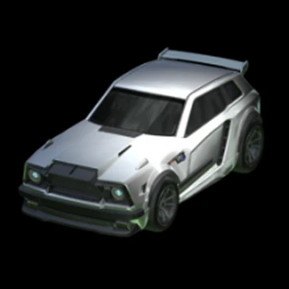
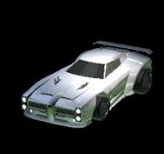
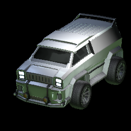
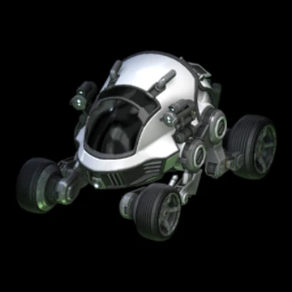
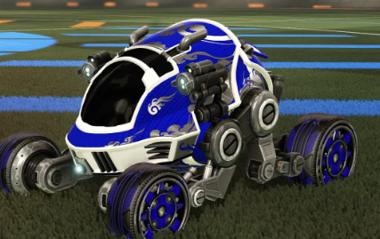

| Image |
Description |
Best Preset |
 |
Octane is the starter car in rocket league, meaning it is the first car that will appear for you to use, it is free, and very popular for everyone! |
 |
|  |
Fennec is a very popular car and everyone uses it! It is most commonly used among the pros to show they are tryhards, and it costs 600 credits.(currency in rl) |
 |
|  |
Dominus is perfect for those who love to ariel as the car is very smooth, therefor allowing for better arial control, it costs 300 credits. |
 |
|  |
The Merc is the most popular car for those who are new and are struggling in the low ranks of the game, because it is big and allows for a bigger hitbox, therefor making it easier to hit and block the ball. |
 |
|  |
Scarab is one if not the most loved car in the rocket league community as it is made mostly for memes and fun activitys in the game. It is also fun the beat people using a very funny-looking car! |
 |